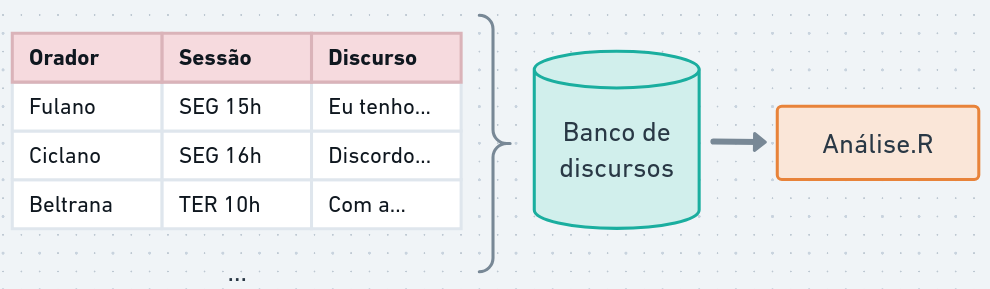
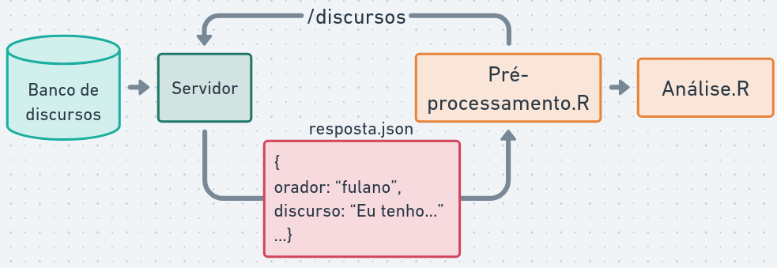
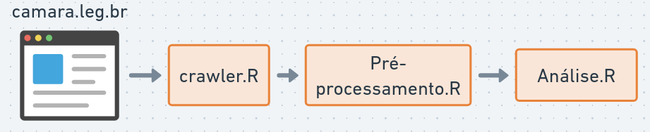
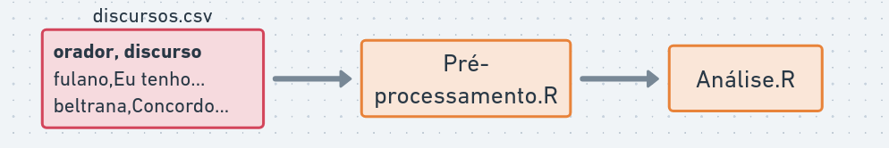
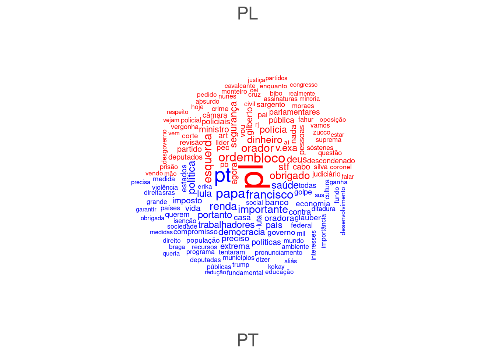

# instalando pacotes utilizados nesta aula
if (!"tidyverse" %in% installed.packages()) {
install.packages("tidyverse")
}
if (!"quanteda" %in% installed.packages()) {
install.packages("quanteda")
}
if (!"quanteda.textstats" %in% installed.packages()) {
install.packages("quanteda.textstats")
}
if (!"quanteda.textplots" %in% installed.packages()) {
install.packages("quanteda.textplots")
}
if (!"stopwords" %in% installed.packages()) {
install.packages("stopwords")
}2 Palavras, morfemas e tokens
NoteNesta aula
- Fontes de dados textuais para política.
- O conceito de Corpus e a biblioteca quanteda.
- Níveis de análise: de caracteres a discursos.
- Processamento básico: Tokenização, Stopwords e Stemming.
- Exploração inicial: Keyword-in-context (KWIC) e Nuvens de Palavras.
2.1 Obtendo dados textuais
Para realizar uma análise de discurso mediada por computador, o primeiro passo é transformar o material empírico (discursos, leis, posts em redes sociais) em um formato que o computador consiga processar.

Quais são as fontes de textos interessantes para estudos políticos?
2.1.1 Tipos de fontes de dados textuais
- Banco de dados e APIs: Muitas instituições (como a Câmara dos Deputados) oferecem APIs, que permitem baixar dados automaticamente com metadados valiosos: quem falou, quando, partido, etc.

APIs permitem fazer requisições e coletar dados semi-estruturados (JSON ou XML).

Web scraping e OCR: Técnicas para extrair textos diretamente de sites ou PDFs. Útil quando os dados não estão organizados em bancos.

Arquivos estruturados (CSV, Excel): Forma comum de trabalhar com dados já coletados.

2.1.2 Exemplo: Carregando Discursos da Câmara
Nesta aula, para focar na análise textual, utilizaremos um conjunto de dados já extraído da API da Câmara dos Deputados, contendo discursos de parlamentares organizados em um arquivo CSV.
Para manipular esses dados, utilizaremos o pacote tidyverse, que é o padrão para organização de dados na linguagem R.
library(tidyverse)
# Carregando os dados
df_discursos <- read_csv("discursos.csv")
# Visualizando as primeiras linhas e colunas mais relevantes
df_discursos |> select(nome, partido, uf, transcricao) |> head()# A tibble: 6 × 4
nome partido uf transcricao
<chr> <chr> <chr> <chr>
1 Acácio Favacho MDB AP "DISCURSO NA ÍNTEGRA ENCAMINHADO PELO SR. …
2 Acácio Favacho MDB AP "O SR. ACÁCIO FAVACHO (Bloco/MDB - AP. Sem…
3 Acácio Favacho MDB AP "DISCURSO NA ÍNTEGRA ENCAMINHADO PELO SR. …
4 Adail Filho REPUBLICANOS AM "O SR. ADAIL FILHO (Bloco/REPUBLICANOS - A…
5 Adilson Barroso PL SP "O SR. ADILSON BARROSO (Bloco/PL - SP. Sem…
6 Adilson Barroso PL SP "O SR. ADILSON BARROSO (Bloco/PL - SP. Sem…2.1.3 Criando o corpus
Na análise de textos, chamamos de corpus o conjunto de documentos que pretendemos estudar. Um corpus não é apenas uma “pilha de textos”, mas uma coleção organizada que preserva o vínculo entre o texto e seus metadados (as variáveis que contextualizam a fala, como o orador ou o partido).
Utilizaremos a biblioteca quanteda, uma das mais robustas para análise quantitativa de textos.
library(quanteda)
# Criando um identificador único para cada discurso
df_discursos <- df_discursos |>
mutate(doc_id = str_c(row_number(), nome, partido, sep = "_"))
# Criando o objeto de corpus
corpus_discursos <- corpus(df_discursos,
text_field = "transcricao",
docid_field = "doc_id")
summary(corpus_discursos, n = 5)Corpus consisting of 1849 documents, showing 5 documents:
Text Types Tokens Sentences id nome uf
1_Acácio Favacho_MDB 256 428 16 204379 Acácio Favacho AP
2_Acácio Favacho_MDB 301 659 42 204379 Acácio Favacho AP
3_Acácio Favacho_MDB 318 588 29 204379 Acácio Favacho AP
4_Adail Filho_REPUBLICANOS 163 260 13 220714 Adail Filho AM
5_Adilson Barroso_PL 243 501 19 221328 Adilson Barroso SP
partido uri
MDB https://dadosabertos.camara.leg.br/api/v2/deputados/204379
MDB https://dadosabertos.camara.leg.br/api/v2/deputados/204379
MDB https://dadosabertos.camara.leg.br/api/v2/deputados/204379
REPUBLICANOS https://dadosabertos.camara.leg.br/api/v2/deputados/220714
PL https://dadosabertos.camara.leg.br/api/v2/deputados/221328
nome_civil sexo cpf data_nascimento
ACÁCIO DA SILVA FAVACHO NETO M 74287028287 1983-09-28
ACÁCIO DA SILVA FAVACHO NETO M 74287028287 1983-09-28
ACÁCIO DA SILVA FAVACHO NETO M 74287028287 1983-09-28
ADAIL JOSÉ FIGUEIREDO PINHEIRO M 77267796249 1992-02-16
ADILSON BARROSO OLIVEIRA M 05585378805 1964-06-14
data_falecimento uf_nascimento municipio_nascimento escolaridade
NA AP Macapá Superior
NA AP Macapá Superior
NA AP Macapá Superior
NA AM Manaus Superior Incompleto
NA MG Minas Novas Superior
situacao data_situacao ultimo_partido hora_inicio fase_evento
Exercício 2023-02-01 MDB 2025-04-29 13:55:00 Encerramento
Exercício 2023-02-01 MDB 2025-04-02 10:32:00 Homenagem
Exercício 2023-02-01 MDB 2025-04-01 13:55:00 Encerramento
Exercício 2023-02-01 REPUBLICANOS 2025-04-02 14:44:00 Breves Comunicações
Exercício 2025-12-14 PL 2025-04-22 17:16:00 Breves Comunicações
tipo_discurso
DISCURSO ENCAMINHADO
HOMENAGEM
DISCURSO ENCAMINHADO
PELA ORDEM
BREVES COMUNICAÇÕES
keywords
Deputado federal,Missão oficial,China,Balanço,Amapá,Fonte alternativa de energia,Desenvolvimento sustentável
Dia Nacional de Conscientização sobre o Autismo,Homenagem,Sessão solene
Macapá (AP),Habitação,Política habitacional,Programa Minha Casa, Minha Vida (PMCMV),Ministério das Cidades,Prefeitura,Habitação de interesse social
Medida provisória,Crédito extraordinário,Comunidade ribeirinha,Crise climática,Amazonas,Seguro-defeso,Pescador,Biodiversidade,Família,vulnerabilidade,Governo federal,Ministra de Estado,Ministério do Meio Ambiente e Mudança do Clima,Secretaria Nacional de Proteção e Defesa Civil (SEDEC)
Ministro do Supremo Tribunal Federal,Esquerda política,contra,Direita política
sumario
O Deputado relatou sua participação em missão oficial à China, realizada entre 17 e 27 de abril, com o objetivo de fortalecer as relações bilaterais entre Brasil e China nas áreas de comércio, infraestrutura, ciência e tecnologia. Apresentou o potencial do Amapá como novo eixo logístico internacional, destacando a proposta de criação da Rota Marítima Brasil–China, com saída direta do Estado. Também abordou temas como energia renovável, inteligência artificial e conectividade em áreas remotas, defendendo a adaptação de tecnologias chinesas à realidade amazônica. Reafirmou o compromisso com o desenvolvimento regional sustentável.
O Deputado discursou na sessão solene em homenagem ao Dia Mundial de Conscientização sobre o Autismo. Destacou a urgência de políticas públicas voltadas ao Transtorno do Espectro Autista (TEA), com ênfase nos níveis 2 e 3, que demandam maior suporte. Reforçou a necessidade de ações concretas além das campanhas simbólicas. Defendeu a criação de gatilhos constitucionais e a destinação de orçamento específico para garantir direitos fundamentais, como acesso à educação inclusiva, terapias e benefícios sociais. Alertou que banalizar o autismo prejudica especialmente os casos mais complexos e pediu maior comprometimento do Congresso com essa pauta.
O Deputado celebrou os avanços do Programa Casa Macapá, vinculado ao Programa Minha Casa, Minha Vida (PMCMV), que oferece subsídios de até R$ 55 mil para facilitar o acesso à casa própria em Macapá. Destacou a realização de um feirão habitacional no fim de semana e a destinação de R$ 43 milhões em emendas, com mais R$ 48 milhões já assegurados no orçamento. Por fim, elogiou o apoio do Ministério das Cidades e da Prefeitura de Macapá (AP), e informou que o modelo já foi replicado em outros Municípios, com 1,8 mil unidades entregues.
O Deputado destacou a importância da aprovação da Medida Provisória nº 1.268, de 2024, que destina R$ 938 milhões para apoiar comunidades ribeirinhas e enfrentar os impactos das crises ambientais no Amazonas. Ressaltou que a medida também garante o pagamento do seguro-defeso aos pescadores, beneficiando famílias vulneráveis e protegendo a biodiversidade local. Reafirmou seu compromisso com a pauta ambiental e fez um apelo à Secretaria Nacional de Proteção e Defesa Civil, ao Governo Federal e à Ministra Marina Silva para que ações urgentes sejam tomadas antes da chegada do verão amazônico, quando aumentam as queimadas e os problemas respiratórios causados pela fumaça.
O Deputado fez críticas ao Supremo Tribunal Federal, afirmando que parte dos Ministros teria atuado politicamente em favor da Esquerda. Alertou sobre rumores de que, caso a anistia fosse aprovada, haveria tentativa de anulação por meio do STF. Informou que opositores da Direita estariam sendo perseguidos e mantidos presos, enquanto integrantes da Esquerda estariam impunes. Defendeu que o Supremo adote uma postura imparcial e afirmou que, em eventual novo Governo de Direita, a Constituição poderá ser usada para enfrentar o que classificou como desequilíbrio institucional. Também fez uma avaliação positiva do Governo Bolsonaro, mencionando resultados econômicos e criticando a atual gestão das estatais.As informações extras (metadados) ficam armazenadas como docvars (variáveis de documento).
docvars(corpus_discursos) |> head() id nome uf partido
1 204379 Acácio Favacho AP MDB
2 204379 Acácio Favacho AP MDB
3 204379 Acácio Favacho AP MDB
4 220714 Adail Filho AM REPUBLICANOS
5 221328 Adilson Barroso SP PL
6 221328 Adilson Barroso SP PL
uri
1 https://dadosabertos.camara.leg.br/api/v2/deputados/204379
2 https://dadosabertos.camara.leg.br/api/v2/deputados/204379
3 https://dadosabertos.camara.leg.br/api/v2/deputados/204379
4 https://dadosabertos.camara.leg.br/api/v2/deputados/220714
5 https://dadosabertos.camara.leg.br/api/v2/deputados/221328
6 https://dadosabertos.camara.leg.br/api/v2/deputados/221328
nome_civil sexo cpf data_nascimento
1 ACÁCIO DA SILVA FAVACHO NETO M 74287028287 1983-09-28
2 ACÁCIO DA SILVA FAVACHO NETO M 74287028287 1983-09-28
3 ACÁCIO DA SILVA FAVACHO NETO M 74287028287 1983-09-28
4 ADAIL JOSÉ FIGUEIREDO PINHEIRO M 77267796249 1992-02-16
5 ADILSON BARROSO OLIVEIRA M 05585378805 1964-06-14
6 ADILSON BARROSO OLIVEIRA M 05585378805 1964-06-14
data_falecimento uf_nascimento municipio_nascimento escolaridade
1 NA AP Macapá Superior
2 NA AP Macapá Superior
3 NA AP Macapá Superior
4 NA AM Manaus Superior Incompleto
5 NA MG Minas Novas Superior
6 NA MG Minas Novas Superior
situacao data_situacao ultimo_partido hora_inicio
1 Exercício 2023-02-01 MDB 2025-04-29 13:55:00
2 Exercício 2023-02-01 MDB 2025-04-02 10:32:00
3 Exercício 2023-02-01 MDB 2025-04-01 13:55:00
4 Exercício 2023-02-01 REPUBLICANOS 2025-04-02 14:44:00
5 Exercício 2025-12-14 PL 2025-04-22 17:16:00
6 Exercício 2025-12-14 PL 2025-04-09 16:00:00
fase_evento tipo_discurso
1 Encerramento DISCURSO ENCAMINHADO
2 Homenagem HOMENAGEM
3 Encerramento DISCURSO ENCAMINHADO
4 Breves Comunicações PELA ORDEM
5 Breves Comunicações BREVES COMUNICAÇÕES
6 Breves Comunicações BREVES COMUNICAÇÕES
keywords
1 Deputado federal,Missão oficial,China,Balanço,Amapá,Fonte alternativa de energia,Desenvolvimento sustentável
2 Dia Nacional de Conscientização sobre o Autismo,Homenagem,Sessão solene
3 Macapá (AP),Habitação,Política habitacional,Programa Minha Casa, Minha Vida (PMCMV),Ministério das Cidades,Prefeitura,Habitação de interesse social
4 Medida provisória,Crédito extraordinário,Comunidade ribeirinha,Crise climática,Amazonas,Seguro-defeso,Pescador,Biodiversidade,Família,vulnerabilidade,Governo federal,Ministra de Estado,Ministério do Meio Ambiente e Mudança do Clima,Secretaria Nacional de Proteção e Defesa Civil (SEDEC)
5 Ministro do Supremo Tribunal Federal,Esquerda política,contra,Direita política
6 justificativa,Voto favorável,Requerimento de urgência,aumento,Despesa pública,Poder Judiciário,Orientação de bancada,alteração,Ex-presidente da República,Crescimento econômico,Imposto,Mérito,Voto contrário
sumario
1 O Deputado relatou sua participação em missão oficial à China, realizada entre 17 e 27 de abril, com o objetivo de fortalecer as relações bilaterais entre Brasil e China nas áreas de comércio, infraestrutura, ciência e tecnologia. Apresentou o potencial do Amapá como novo eixo logístico internacional, destacando a proposta de criação da Rota Marítima Brasil–China, com saída direta do Estado. Também abordou temas como energia renovável, inteligência artificial e conectividade em áreas remotas, defendendo a adaptação de tecnologias chinesas à realidade amazônica. Reafirmou o compromisso com o desenvolvimento regional sustentável.
2 O Deputado discursou na sessão solene em homenagem ao Dia Mundial de Conscientização sobre o Autismo. Destacou a urgência de políticas públicas voltadas ao Transtorno do Espectro Autista (TEA), com ênfase nos níveis 2 e 3, que demandam maior suporte. Reforçou a necessidade de ações concretas além das campanhas simbólicas. Defendeu a criação de gatilhos constitucionais e a destinação de orçamento específico para garantir direitos fundamentais, como acesso à educação inclusiva, terapias e benefícios sociais. Alertou que banalizar o autismo prejudica especialmente os casos mais complexos e pediu maior comprometimento do Congresso com essa pauta.
3 O Deputado celebrou os avanços do Programa Casa Macapá, vinculado ao Programa Minha Casa, Minha Vida (PMCMV), que oferece subsídios de até R$ 55 mil para facilitar o acesso à casa própria em Macapá. Destacou a realização de um feirão habitacional no fim de semana e a destinação de R$ 43 milhões em emendas, com mais R$ 48 milhões já assegurados no orçamento. Por fim, elogiou o apoio do Ministério das Cidades e da Prefeitura de Macapá (AP), e informou que o modelo já foi replicado em outros Municípios, com 1,8 mil unidades entregues.
4 O Deputado destacou a importância da aprovação da Medida Provisória nº 1.268, de 2024, que destina R$ 938 milhões para apoiar comunidades ribeirinhas e enfrentar os impactos das crises ambientais no Amazonas. Ressaltou que a medida também garante o pagamento do seguro-defeso aos pescadores, beneficiando famílias vulneráveis e protegendo a biodiversidade local. Reafirmou seu compromisso com a pauta ambiental e fez um apelo à Secretaria Nacional de Proteção e Defesa Civil, ao Governo Federal e à Ministra Marina Silva para que ações urgentes sejam tomadas antes da chegada do verão amazônico, quando aumentam as queimadas e os problemas respiratórios causados pela fumaça.
5 O Deputado fez críticas ao Supremo Tribunal Federal, afirmando que parte dos Ministros teria atuado politicamente em favor da Esquerda. Alertou sobre rumores de que, caso a anistia fosse aprovada, haveria tentativa de anulação por meio do STF. Informou que opositores da Direita estariam sendo perseguidos e mantidos presos, enquanto integrantes da Esquerda estariam impunes. Defendeu que o Supremo adote uma postura imparcial e afirmou que, em eventual novo Governo de Direita, a Constituição poderá ser usada para enfrentar o que classificou como desequilíbrio institucional. Também fez uma avaliação positiva do Governo Bolsonaro, mencionando resultados econômicos e criticando a atual gestão das estatais.
6 O Deputado justificou seu voto favorável a um requerimento de urgência para projeto que cria gastos na Justiça, explicando que seguiu, inicialmente, a orientação do partido, que posteriormente foi alterada para "não" enquanto ele estava ausente em uma reunião. Reafirmou seu compromisso com a redução de impostos e despesas públicas, citando sua afinidade com o ex-Presidente Bolsonaro e a necessidade de estimular o crescimento econômico por meio de menos tributos. Ressaltou que, no mérito do projeto, votará contra qualquer proposta que aumente encargos à população.Podemos filtrar o corpus com base nelas, o que é essencial para análises comparativas em ciência política:
# Exemplo: Criar um sub-corpus apenas com discursos de parlamentares do PT
corpus_pt <- corpus_subset(corpus_discursos, partido == "PT")
print(corpus_pt)Corpus consisting of 373 documents and 21 docvars.
39_Airton Faleiro_PT :
"O SR. AIRTON FALEIRO (Bloco/PT - PA. Sem revisão do orador.)..."
40_Airton Faleiro_PT :
"O SR. AIRTON FALEIRO (Bloco/PT - PA. Sem revisão do orador.)..."
41_Airton Faleiro_PT :
"O SR. AIRTON FALEIRO (Bloco/PT - PA) - Sr. Presidente, em no..."
42_Airton Faleiro_PT :
"O SR. AIRTON FALEIRO (Bloco/PT - PA. Pela ordem. Sem revisão..."
43_Airton Faleiro_PT :
"O SR. AIRTON FALEIRO (Bloco/PT - PA. Pela ordem. Sem revisão..."
57_Alencar Santana_PT :
"O SR. ALENCAR SANTANA (Bloco/PT - SP. Sem revisão do orador...."
[ reached max_ndoc ... 367 more documents ]Outras bibliotecas relacionadas que vamos utilizar são: quanteda.textstats, para gerar estatísticas, e quanteda.textplots, para visualizações gráficas.
library(quanteda.textstats)
library(quanteda.textplots)2.2 Níveis de análise textual
O estudo da língua é dividido em diversas subáreas:

- fonética e fonologia: sons e sua organização
- morfologia: como morfemas se organizam para formar palavras
- sintaxe: como palavras se organizam para formar sintagmas e orações
- semântica: significado de palavras e frases
- pragmática: organização de orações para fins comunicativos
- discurso: estruturas do texto como todo
O processamento de textos pelo computador (PLN) foca principalmente no texto escrito (sintaxe, semântica e discurso). Contudo, a fala e a entonação também são vitais. Dada a natureza multimodal da análise de discurso, as marcas de oralidade carregam forte peso interpretativo.
Observe o exemplo abaixo das notas taquigráficas da Câmara:
Que tipo de informação é transmitida por meio da fala, além do conteúdo semântico? A transcrição em texto consegue capturar sarcasmo, exaltação ou hesitação? Perceba como os taquígrafos utilizam parênteses e marcadores para tentar registrar reações do plenário.
2.3 A estrutura das palavras: morfemas, lemas e radicais
A forma como dividimos o texto depende do objetivo da nossa análise. Separar palavras em subunidades pode ser útil para lidar com: - neologismos, palavras incorretas ou desconhecidas; - complexidade do texto ou dialetos; - generos literários alternativos.
Por exemplo, Moffitt (2016) destaca o uso de neologismos em performances populistas. Na morfologia, a unidade mínima de significado é o morfema (ex: “casinhas” = casa + inha + s).
2.3.1 Lematização e Anotação Morfossintática
A lematização é o processo de reduzir uma palavra à sua forma original de dicionário (seu “lema”). Por exemplo, “gatos” e “gata” são convertidos para “gato”, e “fui” é convertido para o verbo “ir”.
No português, esse processo é complexo e exige dicionários e ferramentas avançadas (como o projeto MorphoBR ou a biblioteca spacyr), pois depende do contexto (ex: “canto” pode ser o verbo cantar ou o substantivo). Isso enriquece a análise de discurso ao agrupar flexões verbais e nominais sob um mesmo guarda-chuva.
2.3.2 Stemização (Corte do radical)
Uma alternativa mais simples (e crua) muito usada computacionalmente é a stemização (Stemming), que é o processo de cortar as desinências da palavra, mantendo apenas o seu radical (raiz).
Isso reduz drasticamente o vocabulário do texto, facilitando análises de frequência, mas as palavras geradas podem ser ambíguas ou perder nuances de gênero/número que seriam relevantes para a análise.
Exemplo utilizando a biblioteca quanteda:
stems_testar <- char_wordstem(c("testar", "testando", "testarei"), language = "portuguese")
print(stems_testar)[1] "test" "test" "test"2.3.3 Caracteres e Codificação
A menor unidade de informação em um texto digital é o caractere (ou símbolo). O computador usa padrões, como o UTF-8, para catalogar caracteres (incluindo emojis e acentuação gráfica, essenciais em português).
print(tokenize_character("#feliz! \U0001f600"))[[1]]
[1] "#" "f" "e" "l" "i" "z" "!" " " "😀"2.4 Tokenização (Dividindo o texto)
O problema de separar o texto em unidades mínimas para análise é conhecido como tokenização. Em geral, quebramos os discursos em palavras, mas podemos tokenizar por frases se o objetivo for analisar sentenças inteiras.
texto <- 'A deputada disse: "Não aceitaremos cortes". A oposição concordou.'
# Tokenização removendo pontuação
tokens_palavras <- tokens(texto, remove_punct = TRUE)
print(tokens_palavras)Tokens consisting of 1 document.
text1 :
[1] "A" "deputada" "disse" "Não" "aceitaremos"
[6] "cortes" "A" "oposição" "concordou" # Tokenização por sentenças
tokens_frases <- tokens(texto, what = "sentence")
print(tokens_frases)Tokens consisting of 1 document.
text1 :
[1] "A deputada disse: \"Não aceitaremos cortes\"."
[2] "A oposição concordou." 2.4.1 A Matriz de Documentos e Termos (DFM)
Para o computador fazer contagens, ele precisa organizar os tokens em uma estrutura chamada Matriz de Documentos e Termos (Document-Feature Matrix, DFM).
Pense no DFM como uma grande planilha: cada linha é um discurso e cada coluna é uma palavra do vocabulário. A célula contém a quantidade de vezes que aquela palavra apareceu naquele discurso.
dfm_discursos <- corpus_discursos |>
tokens(remove_punct = TRUE, remove_numbers = TRUE) |>
tokens_tolower() |> # converter para minúsculo
dfm()
print(dfm_discursos)Document-feature matrix of: 1,849 documents, 25,831 features (99.29% sparse) and 21 docvars.
features
docs discurso na íntegra encaminhado pelo sr deputado
1_Acácio Favacho_MDB 1 4 1 1 1 1 2
2_Acácio Favacho_MDB 0 2 0 0 0 3 1
3_Acácio Favacho_MDB 1 2 1 1 3 1 1
4_Adail Filho_REPUBLICANOS 0 2 0 0 1 2 0
5_Adilson Barroso_PL 0 3 0 0 0 1 0
6_Adilson Barroso_PL 0 5 0 0 0 1 2
features
docs acácio favacho sem
1_Acácio Favacho_MDB 1 1 1
2_Acácio Favacho_MDB 1 1 1
3_Acácio Favacho_MDB 1 1 1
4_Adail Filho_REPUBLICANOS 0 0 1
5_Adilson Barroso_PL 0 0 1
6_Adilson Barroso_PL 0 0 2
[ reached max_ndoc ... 1,843 more documents, reached max_nfeat ... 25,821 more features ]Por exemplo, para ver a frequência da palavra “presidente”:
print(sum(dfm_discursos[, "presidente"]))[1] 47372.5 Stopwords
Stopwords são palavras funcionais muito comuns (como “o”, “a”, “de”, “e”, “mas”) que, isoladamente, não ajudam a diferenciar os temas dos discursos. Elas são frequentemente removidas para reduzir o “ruído” nos gráficos e nas contagens.
No R, podemos usar o pacote stopwords para obter listas pré-definidas em português:
library(stopwords)
stopwords_portugues <- stopwords(language = "pt")
print(stopwords_portugues[1:10]) [1] "de" "a" "o" "que" "e" "do" "da" "em" "um" "para"Atenção: A remoção de stopwords é ótima para descobrir os temas de um texto, mas pode ser problemática se você estiver analisando estilos ou marcadores conversacionais (o uso excessivo do pronome “nós” vs “eu”, por exemplo, desapareceria se você os tratasse como stopwords).
2.6 Palavras no contexto (Keywords-in-context)
Keywords-in-context (KWIC) é um método qualitativo excelente para a Análise de Discurso. Ele busca um termo específico e exibe a palavra central cercada pelas palavras que vêm antes e depois (o seu contexto).
Isso nos permite analisar os enquadramentos (frames) e associações feitas pelos oradores.
# Buscando o termo "anistia" e observando 3 palavras de contexto
kwic_anistia <- corpus_discursos |>
tokens() |>
kwic("anistia", window = 3) |>
head(10)
kwic_anistiaKeyword-in-context with 10 matches.
[5_Adilson Barroso_PL, 88] a Lei da | Anistia | , a extrema
[22_Adriana Ventura_NOVO, 363] a favor da | anistia | . E a
[22_Adriana Ventura_NOVO, 374] a favor da | anistia | não é passar
[39_Airton Faleiro_PT, 73] que é a | anistia | . Eu,
[39_Airton Faleiro_PT, 395] total, querem | anistia | total. Eu
[39_Airton Faleiro_PT, 619] principais não têm | anistia | e nem têm
[39_Airton Faleiro_PT, 650] no Brasil. | Anistia | , não!
[55_Alberto Fraga_PL, 361] falar aqui de | anistia | , porque sou
[60_Alencar Santana_PT, 1081] não" à | anistia | . Alguns setores
[60_Alencar Santana_PT, 1105] que votar a | anistia | . Nós não Você também pode usar o curinga * para buscar variações (ex: “golp*” pegará “golpe” e “golpista”):
golp_kwic <- corpus_discursos |>
tokens() |>
kwic("golp*", window = 3) |>
head(10)
golp_kwicKeyword-in-context with 10 matches.
[39_Airton Faleiro_PT, 255] quem idealizou o | golpe |
[39_Airton Faleiro_PT, 262] a mobilização do | golpe |
[39_Airton Faleiro_PT, 352] , orquestrou o | golpe |
[39_Airton Faleiro_PT, 444] quem executou o | golpe |
[39_Airton Faleiro_PT, 474] impedir que esse | golpe |
[39_Airton Faleiro_PT, 534] , executa um | golpe |
[39_Airton Faleiro_PT, 562] tentar dar um | golpe |
[44_Alberto Fraga_PL, 124] preparando mais um | golpe |
[62_Alencar Santana_PT, 29] Prisão para os | golpistas |
[62_Alencar Santana_PT, 52] Brasil sofreu um | golpe |
, quem financiou
, quem praticou
contra a democracia
contra a democracia
se efetivasse,
de Estado,
, ocupar e
. Isso aqui
. É isso
, praticado pelos 2.7 Exemplo Prático: Nuvem de Palavras por Partido
Vamos consolidar tudo que aprendemos criando uma visualização que compara as palavras mais ditas pelos deputados do PT e do PL.
Passo 1: Tokenização e Limpeza Vamos quebrar em palavras, remover pontuação, converter para minúsculo e remover stopwords do português.
tokens_limpos <- corpus_discursos |>
tokens(remove_punct = TRUE, remove_symbols = TRUE, remove_numbers = TRUE) |>
tokens_tolower() |>
tokens_remove(stopwords(language = "pt"))Passo 2: Criando o DFM e removendo jargões políticos O plenário da Câmara é cheio de vícios de linguagem (“senhor”, “presidente”, “deputado”). Se não os removermos, a nossa análise será engolida por eles.
dfm_final <- dfm(tokens_limpos)
# Criando lista de palavras "irrelevantes" para o nosso contexto
palavras_irrelevantes <- c("senhor", "sr", "senhora", "sra", "sobre", "presidente",
"deputado", "deputada", "lei", "nº", "projeto", "é", "nesta", "desta")
dfm_final <- dfm_final |> dfm_remove(palavras_irrelevantes)Passo 3: Visualizando a Diferença (Wordcloud) Vamos filtrar os partidos de interesse, agrupar o DFM por partido e gerar a nuvem de comparação. As palavras maiores representam os termos mais frequentes.
dfm_final |>
dfm_subset(partido %in% c("PT", "PL")) |> # filtrar partidos
dfm_group(groups = partido) |> # agrupar matriz por partido
textplot_wordcloud(comparison = TRUE, # modo comparativo
color = c("red", "blue"), # cores PT (red) e PL (blue)
min_count = 5,
max_words = 150)
2.8 Para saber mais
- Leia mais sobre morfemas, tokenização no Capítulo 2 do livro “Speech and Language Processing” (Jurafsky and Martin 2026) e os Capítulos 4 e 5 do livro “Processamento de Linguagem Natural” (Caseli and Nunes 2024).
- Estude os tutoriais completos da biblioteca
quantedaem https://tutorials.quanteda.io/. Saiba mais sobre a biblioteca lendo o artigo de Benoit et al. (2018).
2.9 Atividade prática
- Carregue o arquivo
discursos.csve familiarize-se com as colunas. - Crie um corpus filtrando apenas os discursos de deputados de um gênero ou estado.
- Realize a tokenização e remova as stopwords.
- Crie uma Matriz de Documentos e Termos (DFM).
- Conte as palavras mais comuns utilizando
textstat_frequencye visualize os resultados utilizando uma nuvem de palavras. - Desafio: Tente utilizar a função
kwicpara descobrir em que contexto os parlamentares do gênero ou estado utilizaram a palavra “saúde” ou “educação”.